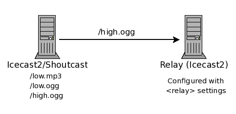

Icecast 2.4.3 Docs — Config File
Overview
This section will describe each section of the config file and is grouped into the following sections:
A word of warning
Please note that, especially for new Icecast users, editing the config file can be quite tricky. It is thus recommended to make a backup of the original config file and then start by just changing all passwords, nothing else. You can then use the source-password to bring up an initial stream and get more comfortable with how Icecast works.
Should you need to customize the configuration, then make a backup of your working config file, before you make any changes. If Icecast refuses to start it is in most cases due to a malformed config file. In such a case running the following command should point out most XML syntax problems.
xmllint icecast.xml
Also check the Icecast error.log for additional hints in case of all problems!
Limits
<limits>
<clients>100</clients>
<sources>2</sources>
<queue-size>102400</queue-size>
<client-timeout>30</client-timeout>
<header-timeout>15</header-timeout>
<source-timeout>10</source-timeout>
<burst-on-connect>1</burst-on-connect>
<burst-size>65536</burst-size>
</limits>This section contains server level settings that, in general, do not need to be changed. Only modify this section if you know what you are doing.
- clients
- Total number of concurrent clients supported by the server. Listeners are considered clients, but so are accesses to any static content (i.e. fileserved content) and also any requests to gather stats. These are max concurrent connections for the entire server (not per mountpoint).
- sources
- Maximum number of connected sources supported by the server. This includes active relays and source clients
- queue-size
- This is the maximum size (in bytes) of the stream queue. A listener may temporarily lag behind due to network congestion and in this case an internal queue is maintained for the listeners. If the queue grows larger than this config value, then it is truncated and any listeners found will be removed from the stream. This will be the default setting for the streams which is 512k unless overridden here. You can override this in the individual mount settings which can be useful if you have a mixture of high bandwidth video and low bitrate audio streams.
- client-timeout
- This does not seem to be used.
- header-timeout
- The maximum time (in seconds) to wait for a request to come in once the client has made a connection to the server. In general this value should not need to be tweaked.
- source-timeout
- If a connected source does not send any data within this timeout period (in seconds), then the source connection will be removed from the server.
- burst-on-connect
- This setting is really just an alias for burst-size. When enabled the burst-size is 64 kbytes and
disabled the burst-size is 0 kbytes. This option is deprecated, use
burst-sizeinstead. - burst-size
- The burst size is the amount of data (in bytes) to burst to a client at connection time. Like burst-on-connect, this is to quickly fill the pre-buffer used by media players. The default is 64 kbytes which is a typical size used by most clients so changing it is not usually required. This setting applies to all mountpoints unless overridden in the mount settings. Ensure that this value is smaller than queue-size, if necessary increase queue-size to be larger than your desired burst-size. Failure to do so might result in aborted listener client connection attempts, due to initial burst leading to the connection already exceeding the queue-size limit.
Authentication
<authentication>
<source-password>hackme</source-password>
<relay-user>relay</relay-user>
<relay-password>hackme</relay-password>
<admin-user>admin</admin-user>
<admin-password>hackme</admin-password>
</authentication>This section contains all the usernames and passwords used for administration purposes or to connect sources and relays.
- source-password
- The unencrypted password used by sources to connect to Icecast. The default username for all source connections is ‘source’ but this option allows to specify a default password. This and the username can be changed in the individual mount sections.
- relay-user
- Used in the master server as part of the authentication when a slave requests the list of streams
to relay. The default username is
relay - relay-password
- Used in the master server as part of the authentication when a slave requests the list of streams to relay.
- admin-user/admin-password
- The username/password used for all administration functions. This includes retrieving statistics, accessing the web-based administration screens, etc. A list of these functions can be found in the “Administration” section of the manual.
Stream Directory Settings
<directory>
<yp-url-timeout>15</yp-url-timeout>
<yp-url>http://dir.xiph.org/cgi-bin/yp-cgi</yp-url>
</directory>This section contains all the settings for listing a stream on any of the Icecast YP Directory servers. Multiple occurances of this section can be specified in order to be listed on multiple directory servers.
- yp-url-timeout
- This value is the maximum time Icecast will wait for a response from a particular directory server. The recommended value should be sufficient for most directory servers.
- yp-url
- The URL which Icecast uses to communicate with the Directory server. The value for this setting is provided by the owner of the Directory server.
Misc Server Settings
Server wide settings
<hostname>localhost</hostname>
<location>earth</location>
<admin>icemaster@localhost</admin>
<fileserve>1</fileserve>
<server-id>icecast 2.4.3</server-id>- hostname
- This is the DNS name or IP address that will be used for the stream directory lookups or possibily the playlist generation if a Host header is not provided. While localhost is shown as an example, in fact you will want something that your listeners can use.
- location
- This sets the location string for this Icecast instance. It will be shown e.g in the web interface.
- admin
- This should contain contact details for getting in touch with the server administrator. Usually this will be an email address, but as this can be an arbitrary string it could also be a phone number. This will be shown e.g. in the web interface.
- fileserve
- This flag turns on the icecast2 fileserver from which static files can be served. All files
are served relative to the path specified in the
<paths><webroot>configuration setting. By default the setting is enabled so that requests for the static files needed by the status and admin pages, such as images and CSS are retrievable. - server-id
- This optional setting allows for the administrator of the server to override the default
server identification. The default is
icecastfollowed by a version number and most will not care to change it however this setting will allow this. It is not recommended to use this setting, unless you have very good reasons and know what you are doing.
TCP Port settings
The following shows how you can specify the listening settings for the server.
generic port setup
The first shows an example of a common and simple way to define a listening socket:
<listen-socket>
<port>8000</port>
</listen-socket>Using this as a basis we can extend this with an <bind-address> setting to limit which address Icecast
will listen on. Most will not need to use bind-address and often get confused by using it when there is
no need. Another possibility is to use an <ssl> boolean setting which informs Icecast that a secured
connection is to be used. A common use for using a secure connection would be for admin page access.
backward compatibility with Shoutcast source clients
The following shows how we can extend a single listen-socket to work with Shoutcast style source clients. There are two issues shoutcast source clients have over icecast source clients, one is the lack of mountpoint and the second is the requirement of two ports. Both of these issues are handled by a simple addition in the listen-socket.
<listen-socket>
<port>8000</port>
<shoutcast-mount>/live.mp3</shoutcast-mount>
</listen-socket>As before the port specified is allocated but this time the shoutcast-mount implicity defines a second listening socket whose port number is always one higher than the port defined, this also informs icecast of which mountpoint the shoutcast source client on this socket will be using. Using this approach you can allow multiple shoutcast source clients to connect at the same time.
old style Shoutcast source client compatible setup (deprecated)
The following is just to show the longer approach to defining shoutcast compatability.
<shoutcast-mount>/live.nsv</shoutcast-mount>
<!-- You may have multiple <listen-socket> elements -->
<listen-socket>
<port>8000</port>
</listen-socket>
<listen-socket>
<port>8001</port>
<shoutcast-compat>1</shoutcast-compat>
</listen-socket>Note that multiple listen-socket sections may be configured in order to have Icecast listen on multiple network interfaces or multiple ports. If a bind-address is not specified for a particular listen-socket, then the socket will be bound to all interfaces (including IPv6 if available). For most people, the bind-address option will not be required and often confuses people.
- port
- The TCP port that will be used to accept client connections.
- bind-address
- An optional IP address that can be used to bind to a specific network card. If not supplied, then it will bind to all interfaces.
- ssl
- If set to 1 will enable HTTPS on this listen-socket. Icecast must have been compiled against openSSL to be able to do so.
- shoutcast-mount
- An optional mountpoint setting to be used when shoutcast DSP compatible clients connect. The default global setting
is
/streambut can be overridden here to use an alternative name which may include an extension that some clients require for certain formats.
Defining this within a listen-socket group tells Icecast that this port and the subsequent port are to be used for Shoutcast compatible source clients. This is an alternative to theshoutcast-compatapproach as this implicitly defines the second listening socket and allows for specifying multiple sockets using different mountpoints for shoutcast source clients. Theshoutcast-mountoutside of alisten-socketgroup is the global setting of the mountpoint to use. - shoutcast-compat
- This optional flag will indicate that this port will operate in Shoutcast compatibility mode. Due to major differences
in the source client connection protocol, if you wish to use any of the shoutcast DJ tools, you will need to configure
at least one socket as shoutcast-compatible. Note that when in this mode, only source clients (and specifically shoutcast
source clients) will be able to attach to this port. All listeners may connect to any of the ports defined without this flag.
Also, for proper Shoutcast DSP compatibility, you must define a listen socket with a port one less than the one defined as
shoutcast-compat. This means if you define8001asshoutcast-compat, then you will need to define a listen port of8000and it must not also be defined asshoutcast-compat. See the example config file in the distribution for more info.
Global HTTP headers
<http-headers>
<header name="Access-Control-Allow-Origin" value="*" />
<header name="X-Robots-Tag" value="index, noarchive" />
<header name="foo" value="bar" status="200" />
<header name="Nelson" value="Ha-Ha!" status="404" />
</http-headers>Icecast can be configured to send custom HTTP headers. This is available as a global setting and inside mountpoints. This section explains the global settings.
This functionality was introduced mainly to enable the use of simplified cross-origin resource sharing. The Icecast default configuration contains the first header, as seen in the above exmple, for this reason.
- http-headers
- This element is placed anywhere inside the main section of the icecast config. It will contain
<header>child elements, that specify the actual headers one by one. - header
- This tag specifies the actual header to be sent to a HTTP client in response to every request.
This tag can contain the following attributes:
nameis required and its value specifies the HTTP header field name.valueis required and its value specifies the HTTP header field value.statusis optional and limits sending the header to certain HTTP status codes. If not specified, the default is to return the header for every HTTP status code. This attribute is only available for global headers, at the moment.
At the moment only global headers will be sent in case the HTTP status is not “200”. This is subject to change in the future.
Avoid placing comments inside <http-headers> as, in this release, it will prevent icecast from parsing further <header> tags.
Relaying Streams
This section contains the servers relay settings. The relays are implemented using a pull system where the receiving
server connects as if it’s a listener to the sending server.
There are two types of relay setups:
a “Master server relay” or a “Specific Mountpoint relay.”
Master Relay
A Master server relay is only supported between Icecast servers and is used to relay a number of mountpoints from a remote Icecast server.
<master-server>127.0.0.1</master-server>
<master-server-port>8001</master-server-port>
<master-update-interval>120</master-update-interval>
<master-username>relay</master-username>
<master-password>hackme</master-password>
<relays-on-demand>0</relays-on-demand>The following diagram shows the basics of using a Master relay.
Please note that the slave is configured with the <master-server>, <master-server-port>, etc… settings
and the master is the Icecast server from which the slave will pull mountpoints and relay them. Using a
Master server relay, all non-hidden mountpoints on the master can be
relayed using this mechanism.

A server is configured as a Master Server relay by specifying the <master-server>, <master-server-port>,
<master-update-interval>, <master-password> values in the config file. The server that is being relayed
does not need any special configuration.
- master-server
- This is the IP for the server which contains the mountpoints to be relayed (Master Server).
- master-server-port
- This is the TCP Port for the server which contains the mountpoints to be relayed (Master Server).
- master-update-interval
- The interval (in seconds) that the Relay Server will poll the Master Server for any new mountpoints to relay.
- master-username
- This is the relay username on the master server. It is used to query the server for a list of mountpoints to
relay. If not specified then
relayis used. - master-password
- This is the relay password on the Master server. It is used to query the server for a list of mountpoints to relay.
- relays-on-demand
- Global on-demand setting for relays. Because you do not have individual relay options when using a master server relay, you still may want those relays to only pull the stream when there is at least one listener on the slave. The typical case here is to avoid surplus bandwidth costs when no one is listening.
Specific Mountpoint Relay
If only specific mountpoints need to be relayed, then you can configure Icecast with a “Specific Mountpoint Relay”.
The following diagram shows the basics of using a Specific Mountpoint relay. Note that the relaying Icecast is
configured with the <relay> settings and will pull the specified mountpoint(s) and relay them to the listeners.
Using a Specific Mountpoint Relay, only those mountpoints specified will be relayed.

Specific Mountpoint Relays can be configured to relay from an Icecast 2 server, as well as Icecast 1.x and Shoutcast.
A server is configured as a Specific Mountpoint Server relay by specifying a <relay> XML chunk in the config file
for each mountpoint to be relayed. The server that is being relayed does not need any special configuration.
<relay>
<server>127.0.0.1</server>
<port>8001</port>
<mount>/example.ogg</mount>
<local-mount>/different.ogg</local-mount>
<username>joe</username>
<password>soap</password>
<relay-shoutcast-metadata>0</relay-shoutcast-metadata>
<on-demand>1</on-demand>
</relay>- server
- This is the IP for the server which contains the mountpoint to be relayed.
- port
- This is the TCP Port for the server which contains the mountpoint to be relayed.
- mount
- The mountpoint located on the remote server. If you are relaying a shoutcast stream,
this should be a
/or/name. - local-mount
- The name to use for the local mountpoint. This is what the mount will be named on the relaying server. By default the remote mountpoint name is used.
- username
- The source of the relay may require authentication itself, if so state the username here.
- password
- The source of the relay may require authentication itself, if so state the password here.
- relay-shoutcast-metadata
- If you are relaying a Shoutcast stream, you may want to specify this indicator to also relay the metadata
(song titles) that are part of the Shoutcast data stream. By default this is enabled
but it is up to the remote server on whether it sends any.
1: enabled,0: disabled - on-demand
- An on-demand relay will only retrieve the stream if there are listeners requesting the stream.
1: enabled,0: disabled (default is<relays-on-demand>). This is useful in cases where you want to limit bandwidth costs when no one is listening.
Mount Specific Settings
<mount type="normal">
<mount-name>/example-complex.ogg</mount-name>
<username>othersource</username>
<password>hackmemore</password>
<max-listeners>1</max-listeners>
<max-listener-duration>3600</max-listener-duration>
<dump-file>/tmp/dump-example1.ogg</dump-file>
<intro>/intro.ogg</intro>
<fallback-mount>/example2.ogg</fallback-mount>
<fallback-override>1</fallback-override>
<fallback-when-full>1</fallback-when-full>
<charset>ISO8859-1</charset>
<public>1</public>
<stream-name>My audio stream</stream-name>
<stream-description>My audio description</stream-description>
<stream-url>http://some.place.com</stream-url>
<genre>classical</genre>
<bitrate>64</bitrate>
<type>application/ogg</type>
<subtype>vorbis</subtype>
<hidden>1</hidden>
<burst-size>65536</burst-size>
<mp3-metadata-interval>4096</mp3-metadata-interval>
<authentication type="xxxxxx">
<!-- See listener authentiaction documentation -->
</authentication>
<http-headers>
<header name="Access-Control-Allow-Origin" value="*" />
<header name="X-Robots-Tag" value="index, noarchive" />
<header name="foo" value="bar" status="200" />
<header name="Nelson" value="Ha-Ha!" status="404" />
</http-headers>
<on-connect>/home/icecast/bin/source-start</on-connect>
<on-disconnect>/home/icecast/bin/source-end</on-disconnect>
</mount>This section contains the settings which apply only to a specific mountpoint and applies to an incoming stream whether it is a relay or a source client. The purpose of the mount definition is to state certain information that can override either global/default settings or settings provided from the incoming stream.
A mount does not need to be stated for each incoming source although you may want to specific certain settings like the maximum number of listeners or a mountpoint specific username/password. As a general rule, only define what you need to but each mount definition needs at least the mount-name. Changes to most of these will apply across a configuration file re-read even on active streams, however some only apply when the stream starts or ends.
- type
- The type of the mount point (default: “normal”). A mount of type “default”
can be used to specify common values for multiple mountpoints.
Note that default mountpoints won’t merge with other mount blocks. You only get those values if notype="normal"mount block exists corresponding to your mountpoint. - mount-name
- The name of the mount point for which these settings apply. MUST NOT be used in case of mount type “default”.
- username
- An optional value which will set the username that a source must use to connect using this mountpoint.
Do not set this value unless you are sure that the source clients connecting to the mount point can be
configured to send a username other than
source.
If this value is not present the default username issource. - password
- An optional value which will set the password that a source must use to connect using this mountpoint. There is also a URL based authentication method for sources that can be used instead.
- max-listeners
- An optional value which will set the maximum number of listeners that can be attached to this mountpoint.
- max-listener-duration
- An optional value which will set the length of time a listener will stay connected to the stream.
An auth component may override this. - dump-file
- An optional value which will set the filename which will be a dump of the stream coming through
on this mountpoint. This filename is processed with strftime(3). This allows to use variables like
%F. - intro
- An optional value which will specify the file those contents will be sent to new listeners when they connect but before the normal stream is sent. Make sure the format of the file specified matches the streaming format. The specified file is appended to webroot before being opened.
- fallback-mount
- This optional value specifies a mountpoint that clients are automatically moved
to if the source shuts down or is not streaming at the time a listener connects. Only one can be
listed in each mount and should refer to another mountpoint on the same server that is streaming in
the same streaming format.
If clients cannot fallback to another mountpoint, due to a missing fallback-mount or it states a mountpoint that is just not available, then those clients will be disconnected. If clients are falling back to a mountpoint and the fallback-mount is not actively streaming but defines a fallback-mount itself then those clients may be moved there instead. This multi-level fallback allows clients to cascade several mountpoints.
A fallback mount can also state a file that is located in webroot. This is useful for playing a pre-recorded file in the case of a stream going down. It will repeat until either the listener disconnects or a stream comes back available and takes the listeners back. As per usual, the file format should match the stream format, failing to do so may cause problems with playback.
Note that the fallback file is not timed so be careful if you intend to relay this. They are fine on slave streams but don’t use them on master streams, if you do then the relay will consume stream data at a faster rate and the listeners on the relay would eventually get kicked off. - fallback-override
- When enabled, this allows a connecting source client or relay on this mountpoint to move listening clients back from the fallback mount.
- fallback-when-full
- When set to
1, this will cause new listeners, when the max listener count for the mountpoint has been reached, to move to the fallback mount if there is one specified. no-yp(deprecated)- Setting this option prevents this mountpoint from advertising on YP. The default is
0so YP advertising can occur however you may want to prevent it here if you intend listeners to connect to a local relay instead.
Deprecated option, replaced by<public> - charset
- For non-Ogg streams like MP3, the metadata that is inserted into the stream often has no defined character set.
We have traditionally assumed UTF8 as it allows for multiple language sets on the web pages and stream directory,
however many source clients for MP3 type streams have assumed Latin1 (ISO 8859-1) or leave it to whatever character
set is in use on the source client system.
This character mismatch has been known to cause a problem as the stats engine and stream directory servers want UTF8 so now we assume Latin1 for non-Ogg streams (to handle the common case) but you can specify an alternative character set with this option.
The source clients can also specify acharset=parameter to the metadata update URL if they so wish. - public
- The default setting for this is
-1indicating that it is up to the source client or relay to determine if this mountpoint should advertise. A setting of0will prevent any advertising and a setting of1will force it to advertise. If you do force advertising you may need to set other settings listed below as the YP server can refuse to advertise if there is not enough information provided. - stream-name
- Setting this will add the specified name to the stats (and therefore YP) for this mountpoint even if the source client/relay provide one.
- stream-description
- Setting this will add the specified description to the stats (and therefore YP) for this mountpoint even if the source client/relay provide one.
- stream-url
- Setting this will add the specified URL to the stats (and therefore YP) for this mountpoint even if the source client/relay provide one.
The URL is generally for directing people to a website. - genre
- Setting this will add the specified genre to the stats (and therefore YP) for this mountpoint even if the source client/relay provide one.
This can be anything be using certain key words can help searches in the YP directories. - bitrate
- Setting this will add the specified bitrate to the stats (and therefore YP) for this mountpoint even if the source client/relay provide one.
This is stated in kbps. - type
- Setting this will add the specified mime type to the stats (and therefore YP) for this mountpoint even if the source client/relay provide one.
It is very unlikely that this will be needed. - subtype
- Setting this will add the specified subtype to the stats (and therefore YP) for this mountpoint. The subtype is really to help the YP server to identify the components of the type. An example setting is vorbis/theora do indicate the codecs in an Ogg stream
- burst-size
- This optional setting allows for providing a burst size which overrides the default burst size as defined in limits.
The value is in bytes. - mp3-metadata-interval
- This optional setting specifies what interval, in bytes, there is between metadata updates within shoutcast compatible streams. This only applies to new listeners connecting on this mountpoint, not existing listeners falling back to this mountpoint. The default is either the hardcoded server default or the value passed from a relay.
- hidden
- Enable this to prevent this mount from being shown on the xsl pages. This is mainly for cases where a local relay is configured and you do not want the source of the local relay to be shown.
- authentication
- This specifies that the named mount point will require listener (or source) authentication. Currently, we support a file-based
authentication scheme (
type=htpasswd) and URL based authentication request forwarding. A mountpoint configured with an authenticator will display a red key next to the mount point name on the admin screens.
You can read more about listener authentication and URL based source authentication here. - http-headers
- This element is placed anywhere inside the mount section of the icecast config. It will contain
<header>child elements, that specify the actual HTTP headers one by one. - header
- This tag specifies the actual header to be sent to a HTTP client in response to every request for this mount point, but currently only if the HTTP status code is “200”.
This tag can contain the following attributes:
nameis required and its value specifies the HTTP header field name.valueis required and its value specifies the HTTP header field value.
- on-connect
- State a program that is run when the source is started. It is passed a parameter which is the name of the mountpoint that is starting. The processing of the stream does not wait for the script to end. Caution should be exercised as there is a small chance of stream file descriptors being mixed up with script file descriptors, if the FD numbers go above 1024. This will be further addressed in the next Icecast release. This option is not available on Win32
- on-disconnect
- State a program that is run when the source ends. It is passed a parameter which is the name of the mountpoint that has ended.
The processing of the stream does not wait for the script to end.
Caution should be exercised as there is a small chance of stream file descriptors being mixed up with script file descriptors, if the FD numbers go above 1024. This will be further addressed in the next Icecast release. This option is not available on Win32
Path Settings
<paths>
<basedir>./</basedir>
<logdir>./logs</logdir>
<pidfile>./icecast.pid</pidfile>
<webroot>./web</webroot>
<adminroot>./admin</adminroot>
<allow-ip>/path/to/ip_allowlist</allow-ip>
<deny-ip>/path_to_ip_denylist</deny-ip>
<ssl-certificate>/path/to/certificate.pem</ssl-certificate>
<ssl-allowed-ciphers>ECDH+AESGCM:DH+AESGCM:ECDH+AES256:DH+AES256:ECDH+AES128:DH+AES:ECDH+3DES:DH+3DES:RSA+AESGCM:RSA+AES:RSA+3DES:!aNULL:!MD5:!DSS</ssl-allowed-ciphers>
<alias source="/foo" dest="/bar"/>
</paths>This section contains paths which are used for various things within icecast. All paths (other than any aliases) should not end in a /.
- basedir
- This path is used in conjunction with the chroot settings, and specified the base directory that is chrooted to when the server is started.
This feature is not supported on Win32. - logdir
- This path specifies the base directory used for logging. Both the
error.logandaccess.logwill be created relative to this directory. - pidfile
- This pathname specifies the file to write at startup and to remove at normal shutdown. The file contains the process id of the icecast process.
This could be read and used for sending signals to Icecast. - webroot
- This path specifies the base directory used for all static file requests. This directory can contain all standard file types
(including mp3s and ogg vorbis files). For example, if webroot is set to
/var/share/icecast2, and a request forhttp://server:port/mp3/stuff.mp3comes in, then the file/var/share/icecast2/mp3/stuff.mp3will be served. - adminroot
- This path specifies the base directory used for all admin requests. More specifically, this is used to hold the XSLT scripts used for the web-based admin interface. The admin directory contained within the icecast distribution contains these files.
- allow-ip
- If specified, this points to the location of a file that contains a list of IP addresses that will be allowed to connect to Icecast.
This could be useful in cases where a master only feeds known slaves.
The format of the file is simple, one IP per line. - deny-ip
- If specified, this points to the location of a file that contains a list of IP addressess that will be dropped immediately.
This is mainly for problem clients when you have no access to any firewall configuration.
The format of the file is simple, one IP per line. - alias
- Aliases are used to provide a way to create multiple mountpoints that refer to the same mountpoint.
For example:<alias source="/foo" dest="/bar"> - ssl-certificate
- If specified, this points to the location of a file that contains both the X.509 private and public key. This is required for HTTPS support to be enabled. Please note that the user Icecast is running as must be able to read the file. Failing to ensure this will cause a “Invalid cert file” WARN message, just as if the file wasn’t there.
- ssl-allowed-ciphers
- This optional tag specifies the list of allowed ciphers passed on to the SSL library. Icecast contains a set of defaults conforming to current best practices and you should only override those, using this tag, if you know exactly what you are doing.
Logging Settings
<logging>
<accesslog>access.log</accesslog>
<errorlog>error.log</errorlog>
<playlistlog>playlist.log</playlistlog>
<loglevel>4</loglevel> <!-- 4 Debug, 3 Info, 2 Warn, 1 Error -->
</logging>This section contains information relating to logging within Icecast. There are three logfiles currently generated by Icecast,
an error.log (where all log messages are placed), an access.log (where all stream/admin/http requests are logged) and an
optional playlist.log.
Note that on non-win32 platforms, a HUP signal can be sent to Icecast in which the log files are re-opened for appending giving the ability move/remove the log files.
If you set any of the filenames to a simple dash (e.g. <accesslog>-</accesslog>) then Icecast will direct the log output to
STDERR instead of a file.
- accesslog
- Into this file, all requests made to the icecast2 will be logged. This file is relative to the path specified by the
<logdir>config value. - errorlog
- All Icecast generated log messages will be written to this file. If the loglevel is set too high (Debug for instance) then this file can grow fairly large over time. Currently, there is no log-rotation implemented.
- playlistlog
- Into this file, a log of all metadata for each mountpoint will be written. The format of the logfile will most likely change over time as we narrow in on a standard format for this. Currently, the file is pipe delimited. This option is optional and can be removed entirely from the config file.
- logsize
- This value specifies (in Kbytes) the maxmimum size of any of the log files. When the logfile grows beyond this value, icecast will either
rename it to
logfile.old, or add a timestamp to the archived file (if logarchive is enabled). - logarchive
- If this value is set, then Icecast will append a timestamp to the end of the logfile name when logsize has been reached. If disabled, then
the default behavior is to rename the logfile to
logfile.old(overwriting any previously saved logfiles). We disable this by default to prevent the filling up of filesystems for people who don’t care (or know) that their logs are growing. - loglevel
- Indicates what messages are logged by icecast. Log messages are categorized into one of 4 types, Debug, Info, Warn, and Error.
The following mapping can be used to set the appropriate value:
- loglevel =
4: Debug, Info, Warn, Error messages are printed - loglevel =
3: Info, Warn, Error messages are printed - loglevel =
2: Warn, Error messages are printed - loglevel =
1: Error messages only are printed
- loglevel =
Security Settings
<security>
<chroot>0</chroot>
<changeowner>
<user>nobody</user>
<group>nogroup</group>
</changeowner>
</security>This section contains configuration settings that can be used to secure the icecast server by performing a chroot to a secured location or changing user and group on start-up. The latter allows icecast to bind to priviledged ports like 80 and 443, by being started as root and then dropping to the configured user/group after binding listener-sockets. This is currently not supported on Win32.
- chroot
- An indicator which specifies whether a
chroot()will be done when the server is started. The chrooted path is specified by the<basedir>configuration value. Setting up and using a chroot is an advanced concept and not in the scope of this document. - changeowner
- This section indicates the user and group that will own the icecast process when it is started.
These need to be valid users on the system. Icecast must be started as root for this to work.